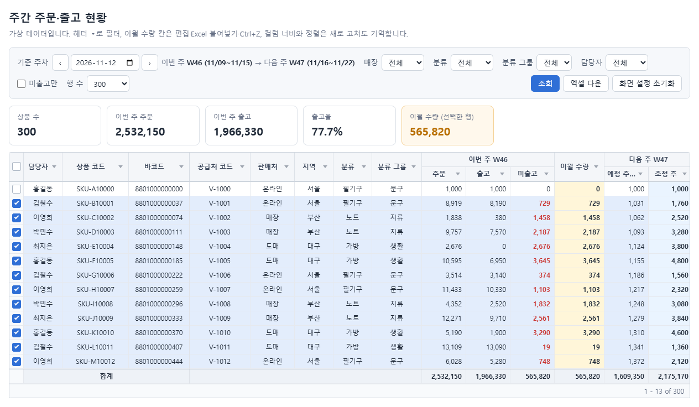
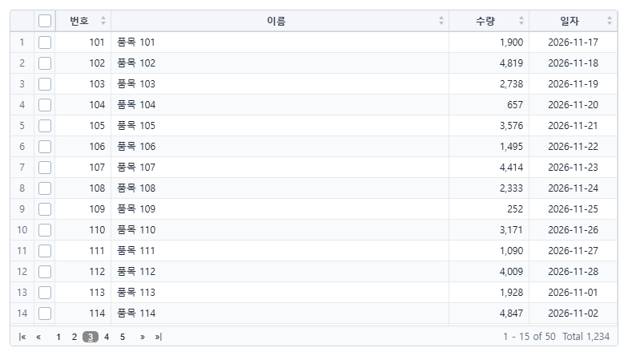
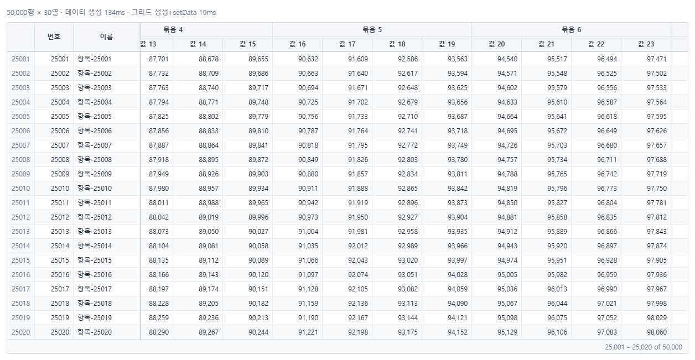

Weekly orders
A full working screen: edit, paste from Excel, filter, undo, and export to xlsx. Switch between 6, 300, and 50,000 rows.

Cell editors
Six editors and the full keyboard model. Select a cell and type; the first keystroke is never lost.

Totals, tree, and merged cells
Group subtotals with a footer, a parent-key tree, and vertically merged cells that keep their label visible while scrolling.

Server-side paging
Page buttons and sorting handed off to a (simulated) server through pagechange and sortchange.

50,000 rows × 30 columns
Virtual scrolling in both directions. Creating the grid and loading the data takes a few dozen milliseconds.